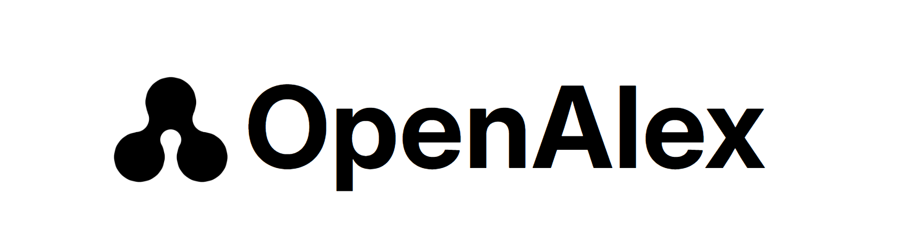
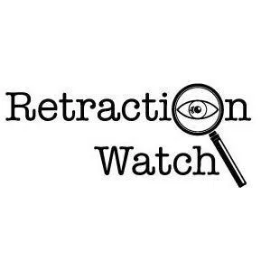

Executive Summary
When Microsoft Academic Graph (MAG) shut down in 2021, the gap it left was filled not by a commercial database but by OpenAlex, released under a CC0 license by the nonprofit OurResearch. It opened more than 300 million works through a free API, and today it is the default knowledge source behind AI research agents such as Elicit, SciSpace, and Consensus, and behind countless RAG pipelines. Yet the tagline that prompted this report — "free, no key required" — is already half in the past tense. In February 2026, OpenAlex announced mandatory API keys and usage-based pricing.
The point is not scale but the price of breadth. Much of what makes OpenAlex look large comes from a definition of "Work" that counts preprints and grey literature too, and that openness comes back as diluted completeness and a looser contamination filter. Author-identity precision has improved dramatically thanks to an algorithm overhaul, but 92% means "one in eight is still wrong," and retraction flags differ so sharply across databases that only 3% of retracted papers are flagged consistently by all four. The broader the source, the blurrier the definitions; the freer it is, the more the burden of verifying quality shifts to whoever uses the data.
So this report does not say "don't use OpenAlex." On the contrary — much as the Leiden Ranking narrowed its scope from all 300 million records to a reproducible 9.3 million to build an open ranking, we lay out how to audit before ingesting and how to narrow to fit your purpose. What this piece covers is how openness swallowed without verification becomes a risk in the AI pipeline, and how to cut that risk off.
321M
Indexed works
Measured at 320.97M on 2026-07-23 — already past the "250M" users remembered
92%
Author-ID precision
The overhaul lifted it from 0.60 to 0.92 — yet one in eight is still wrong
3%
4-DB retraction match
Share of papers all four databases flag as "retracted" — sources disagree wildly
3.0x
Dataset-abusing papers
2025-vs-2022 rise in paper-mill works that exploit public datasets
Open Source Replaces a Dead Utility
The story begins with a death. From 2016, Microsoft offered the scholarly knowledge graph Microsoft Academic Graph (MAG) for free, serving as shared infrastructure for bibliometric research. Then, in 2021, Microsoft shut the service down without warning. The ground on which countless studies and tools stood had disappeared.
A nonprofit, not a commercial database, filled the gap. OurResearch, the team behind Unpaywall, released OpenAlex in 2022 as an open successor to MAG. The name comes from the ancient Library of Alexandria. It weaves papers, authors, journals, institutions, and topics into a single graph, releases the whole thing under CC0 (public domain), and offered an API that was free and key-free. The introduction that prompted this report — "about 250 million records, no key required" — describes OpenAlex from exactly that era.

This replacement was more than a declaration. Sorbonne University canceled its Clarivate commercial-tool subscription in 2023 and moved to open alternatives including OpenAlex; universities such as Lorraine, Utrecht, and Zürich pulled out of the THE World University Rankings, explicitly citing a shift to open data. The French Ministry of Higher Education and Research signed a multi-year partnership with OpenAlex in 2024. The backdrop was the roughly one-billion-dollar annual subscription cost that commercial databases imposed on libraries, together with practices that structurally excluded certain regions and fields. The banner of "free and open" thus turned into concrete institutional choices.
OpenAlex's data model is a graph in which five kinds of entities point at one another. Works sit at the center, and to each paper attach who wrote it (Authors), where it appeared (Sources), where the authors are affiliated (Institutions), and what it is about (Topics). The scale, as measured live via the API on July 23, 2026, is shown below.
What stands out is the growth rate. The 250 million works users had in mind is a figure from around 2022–2023; at measurement time it had already passed 320.97 million. Statistics for a scholarly graph move this fast. That is why every OpenAlex-native number in this report carries a "measured 2026-07-23" tag. And it is not only scale that moves fast. The very identity of "free, no key required" has begun to wobble.
To handle an API load reaching 1.5 billion calls a month (a volume exceeding Crossref's), OpenAlex announced on February 13, 2026 that API keys would become mandatory and pricing would move to usage-based tiers. Calls made without a key would return an error after burning through 100 credits, and the long-used mailto-parameter approach would be phased out. That said, as late as July 23, 2026 — when this report actually made its calls — several requests still returned normally with only the mailto parameter. There was, in other words, a five-month gap between announcement and enforcement. That even free, open infrastructure changes its policy quickly is the first warning this piece raises. The timeline below traces that lineage at a glance.
The Two Faces of "Broad"
The first thing that surprises anyone meeting OpenAlex is its scale. More than 300 million works looks like three or four times the size of commercial databases such as Scopus or Web of Science. But comparing this number at face value will always mislead you, because each database defines "what counts as one work" differently.
OpenAlex takes Crossref as its primary feed and casts a wide net that includes preprints, theses, grey literature, and datasets. Scopus and WoS, by contrast, are "curation-type": they selectively include journals that have passed editorial review. So the bars below should be read as a picture of definitional differences, not of who is bigger.
2.1The price of breadth — diluted completeness
Count broadly and the total grows, but how fully each field is populated (completeness) drops. Grey literature and short notes often have no DOI, no abstract, and no reference list. The fill rates for Works fields, measured on July 23, 2026, are as follows.
| Field | Fill rate | Interpretation |
|---|---|---|
| Has DOI | 67.8% | One-third exist with no DOI — no anchor for identification or linking |
| Has abstract | 53.7% | Cumulative stock — look only at recent years and it is lower (see below) |
| Has references | 31.5% | Fewer than a third of works can be placed on a citation graph |
| Full-text indexed | 13.0% | Only a minority are indexed down to the body text |
| ≥1 institution linked | 42.4% | More than half have no institutional information → covered in Section 3 |
Here is a trap that is easy to misread. Low completeness does not mean low quality. Compared with a narrowly scoped database like Crossref, OpenAlex's completeness percentages are structurally bound to look lower, because the broad-counting denominator is packed with grey literature. In fact, when Culbert and colleagues controlled the sample to the 16.8 million records the three databases share, OpenAlex's reference coverage was on par with Scopus and WoS (Culbert et al., Scientometrics 2025). In the humanities and social sciences (SSH) it indexed 66.9% of journals, ahead of Scopus (48.2%), and it showed an edge in multilingual coverage across French, Spanish, German, and more.
So "large" and "inaccurate" are separate stories. OpenAlex is large and, on controlled samples, on par with the commercial databases. The problem is that its broad-counting definition pays a price elsewhere. The concept diagram below shows the relationship between the two approaches approximately.
One thing is not OpenAlex's fault. The recent sharp drop in abstract completeness is because, since late 2024, publishers such as Elsevier, Springer Nature, and IEEE have halted abstract distribution to Crossref to guard against AI training. Some analyses report that one publisher's abstract-retention rate for its most recent papers fell as low as 22.5%. That drop shows plainly that data quality is not one database's problem but a responsibility borne jointly across the entire span of production and distribution.
Who Is Who — The Author & Institution Identity Trap
Gathering exactly "the papers written by John Smith" is harder than it sounds. There are hundreds of namesakes, and one person is scattered across many spellings (initials, full names, transliterations). This problem is called author disambiguation. OpenAlex overhauled its algorithm for this task and made real gains: precision against a gold standard of corresponding authors jumped from 0.60 to 0.92, and the overhaul assigned correct corresponding authors to about 7 million works anew. The scale of the overhaul itself says how hard the problem is. It recomputed roughly 100 million author embeddings and about 700 million pairwise work similarities, and in the process split roughly 3.2 million overmerged author profiles back apart by reconciling them against ORCID source data.
But read 92% precision the other way around and it becomes this: one in eight is still wrong. And that accuracy is uneven. Data-rich fields such as electrical and information engineering exceed 90% recall, while some regions and fields are noticeably lower. Nobel laureate economist Claudia Goldin's papers have been reported scattered across at least three separate author profiles, and although a correction form exists, some requests have sat unaddressed for months. If an AI agent trusts "this author's paper list" as-is and cites it, that one-in-eight error rides straight into the result.
3.1The two faces of ORCID — 7.5% and 90%
How widely ORCID, the international standard identifier for author identity, is attached also looks different on the surface than underneath. By author profile, only 7.5% of the total (about 9.07 million people) have an ORCID. That looks low. But by paper, it is a different picture. Culbert and colleagues report that more than 90% of OpenAlex papers contain at least one ORCID, because ORCIDs cluster among prolific and lead authors. The same study adds a caveat, though: this 90%-plus looks somewhat inflated by some misassigned ORCIDs. Both numbers are true, and reliability turns on which unit you look through.
3.2Institutions are accurate only "once assigned"
Institutional information is subtler still. Practically all of OpenAlex's institution entities carry a ROR (Research Organization Registry) ID. And a paper verifying African research coverage reports that "the ROR IDs OpenAlex assigned were all accurate when checked against the registry." In other words, once a ROR is assigned, it is accurate. The trouble erupts in the assignment process and in how time is reflected.
This asymmetry also shows up in institution-level independent checks. In a study matching the publications of France's École des Ponts, recall was a high 93%, finding most of the actual papers — but about one-quarter of the retrieved results were in fact affiliated with other institutions. It means that even if an assigned ROR is trustworthy, error accumulates at the step of deciding what to attach to that institution. That error appears mainly along three lines.
- ·Affiliation-string parsing errors: there are reports that about 98% of papers involving the Chinese AI firm SenseTime are misclassified as "Group Sense," and that more than 50 affiliation-string patterns match the wrong country.
- ·Whole-career retroactive attribution: there is a structural feature by which the entire affiliation history an author profile has accumulated is applied retroactively to a specific paper record. Fail to distinguish "affiliation at time of publication" from "the author's whole-career institutions," and institution-level statistics like university rankings are misattributed.
- ·More than half have none at all: 57.6% of all works have not a single institution ID linked in their authorship.
The retroactive attribution is a case this report observed directly by querying the authorship record of the "Deep Learning" paper (Nature, 2015), where a single author was shown as simultaneously affiliated with multiple institutions such as Meta and NYU. This is one measured observation, not a generalized error rate; for quantitative error rates we rely on the academic-study figures above.
Classification and Integrity — Retractions, and Contamination
Classifying what a paper is about also changed a lot in 2024. OpenAlex effectively discontinued maintenance of its old Wikidata-based classification scheme, Concepts (65,026 of them), and switched to Topics (4,516), a four-level hierarchy of domain → field → subfield → topic. A tidier scheme, but meet it with a broad definition and unclassified items and drift remain. As measured, 12.1% of the total is still without a topic assigned.
More sensitive than classification are integrity signals, and among them retraction handling. Fail to filter out retracted papers and wrong conclusions keep getting cited. Below is a scorecard organizing the five quality issues this chapter covers by severity.
4.1"I thought it was retracted — but only that DB says so"
Retraction handling differs wildly across databases. One cross-comparison study reports that only 3% of papers are flagged as retracted consistently by all four — Crossref, Retraction Watch, Scopus, and WoS. For the very same paper, the retraction count diverges sharply from one database to the next.
In 2023, OpenAlex directly absorbed the Retraction Watch data that Crossref had acquired and released, reinforcing its retraction field; thanks to that it indexes withdrawals broadly too. However, between December 22, 2023 and March 19, 2024 there was a data-error window in which the is_retracted boolean field mislabeled some papers, and users who worked with data from that period were advised to re-check. Reducing "whether a paper is retracted" to a single boolean lost information. The conclusion is one: never trust a single source for retraction status — cross-check several.

4.2A broad definition loosens the filter
The last risk is contamination. Paper-mill works mass-produced by abusing public datasets (FDA adverse-event reports, UK Biobank, and the like) were observed, by OpenAlex's index, at 23,005 in 2025 alone — 11,577 above the trend forecast, a 3.0x rise versus 2022 (4.2x for China-origin work). It is because OpenAlex, being Crossref-based, has a broad definition of a "research work" that structurally lets front matter, back matter, and grey literature through. Paradoxically, that same breadth closes the non-English coverage gap, so it also serves as a control corpus in paper-mill detection research. This contamination problem is also the data-infrastructure version of a trend we flagged earlier in The New Era of Science That AI Is Reshaping.
Before It Enters the AI Research Pipeline
Everything so far converges on a single path. When contaminated or misattributed bibliographic data passes through RAG retrieval and reaches an agent, that error is amplified into fake citations, misattribution, and hallucination before it reaches the user. The problem is when this path has no verification gate at all.
The five principles for building this gate in practice are as follows. Each item answers, one for one, a defect diagnosed in the chapters above.
- 1Use ORCID as a paper-level anchor. Don't trust author profiles (92% precision) as-is; reconcile author identity yourself using paper-level ORCID. (answers Section 3)
- 2Cross-check retractions across multiple sources. Don't rely on OpenAlex's single retraction flag; cross-check against Retraction Watch and others. Design on the premise that 4-DB agreement is only 3%. (answers Section 4)
- 3Down-weight topic confidence. Given 12.1% unclassified and classification drift, never use automatic classification as an absolute criterion — treat it only as an auxiliary signal. (answers Section 4)
- 4Separate affiliation-at-publication from whole-career institutions. When producing institution-level aggregates, filter on affiliation at the time of publication, not the full retroactively applied history. (answers Section 3)
- 5Narrow the scope to fit your purpose. Don't swallow all 300 million records; narrow reproducibly to the subset that fits what you intend to use it for. (answers Sections 2 & 4)
The fifth principle already has a proven model. The CWTS Leiden Ranking Open Edition deliberately narrowed its scope not to all 300 million records but to about 9.3 million "articles and reviews in core international journals, in English," where reproducibility can be secured, to build an open ranking. It is a case that shows a trustworthy result comes only when you audit and narrow to fit your purpose, rather than swallowing a broad source whole.
OpenAlex is not "data you should not use." Its breadth of coverage, the parity of its reference quality, and its CC0 open governance are clear strengths. But the good intention of "free and open" is not itself a quality guarantee. Data quality is decided not by whether the source is virtuous, but by where and how you use it — fit-for-purpose.
Why This Matters to Pebblous
The reason Pebblous watches OpenAlex is not the scholarly graph itself. It is that the problems this enormous open dataset ran into have exactly the same structure as the problems Pebblous DataClinic diagnoses in industrial data every day.
Quality defects map one-to-one
Author-identity errors, imprecise institution mapping, topic-classification drift, and delayed retraction handling map directly onto the classic data-quality defects of label error, duplication, distribution drift, and missingness. OpenAlex is a case that demonstrates "AI-Ready Data: audit before you ingest" through the concrete material of a scholarly knowledge graph.
Quality carries through to model output
The proposition that the quality of training and retrieval data carries through to a model's output is shown by this report as a concrete cause and effect: "when an AI research agent retrieves contaminated references, fake citations arise." Diluted completeness, the one-in-eight error at 92% precision, and the 3% cross-agreement on retractions all converge on one multi-source verification principle — quality signals differ by source, so never blindly trust a single source.
The audit procedure itself is the demand
Giving practitioners who build RAG, agents, and research-information systems an actionable checklist (Section 5) for "what, and how, to audit before you trust a free open source" — that audit procedure itself is the data-quality-audit demand Pebblous can put into words and automate. It is also about staking out, in the age of open data, the vantage point of the "data-quality auditor."
Without standards there is no comparison, and without an audit there is no trust. OpenAlex is the most vivid real-world case showing that, in the age of open data, quality is decided not at the source but at the point of use.
References
Academic papers & preprints
- 1.Priem, J., Piwowar, H., & Orr, R. (2022). OpenAlex: A fully-open index of scholarly works, authors, venues, institutions, and concepts. arXiv:2205.01833. (Original OpenAlex introduction paper)
- 2.Culbert, J. et al. (2025). Reference Coverage Analysis of OpenAlex compared to Web of Science and Scopus. Scientometrics, 10.1007/s11192-025-05293-3. (16.8M controlled sample — reference coverage on par)
- 3.Analysis of the Publication and Document Types in OpenAlex, WoS, Scopus, PubMed and Semantic Scholar. Quantitative Science Studies (MIT Press), 10.1162/QSS.a.406 / arXiv:2406.15154. (Document-type comparison — Semantic Scholar completeness 37%)
- 4.Beyond traditional metrics: Assessing OpenAlex and Scopus for SSH research evaluation. SAGE, 10.1177/01655515251411204 (2026). (SSH journals 66.9% vs 48.2%)
- 5.Accuracy Assessment of OpenAlex and Clarivate Scholar ID with an LLM-Assisted Benchmark. arXiv:2502.11610 (2025). (Author-disambiguation accuracy benchmark methodology)
- 6.Hauschke, C., & Nazarovets, S. (2025). (Non-)retracted academic papers in OpenAlex. SAGE, 10.1177/01655515251322478. (is_retracted field error window)
- 7.Ortega, J. L., & Delgado-Quirós, L. (2024). The indexation of retracted literature in seven principal scholarly databases. Scientometrics, 10.1007/s11192-024-05034-y. (Non-curated DBs' edge in retraction indexing)
- 8.Visser, M., van Eck, N. J., & Waltman, L. (2021). Large-scale comparison of bibliographic data sources (Scopus, WoS, Dimensions, Crossref, MAG). Quantitative Science Studies. (Controlled-sample scale comparison)
- 9.van Eck, N. J., & Waltman, L. (2025). Crossref abstract-distribution audit — analysis of the sharp drop in abstract coverage. (Publisher-driven halt to abstract distribution)
- 10.German-institution OpenAlex–Scopus affiliation accuracy comparison. arXiv:2605.01337 (2026); African research coverage & ROR verification. arXiv:2409.01120 (2024).
Policy, official documents & statistics
- 11.OpenAlex official blog — "A big improvement to our corresponding-author data" (corresponding-author precision 0.60→0.92) and "OpenAlex: 2024 in Review" (Sorbonne switch, Arcadia $7.5M grant).
- 12.OurResearch — openalex-help/pricing.md (GitHub) and the 2026-02 API-key / usage-based pricing notice.
- 13.CWTS Leiden Ranking Open Edition — open.leidenranking.com. (Reproducible open ranking narrowed to 9.3M records)
- 14.dataesr/openalex-affiliations (public GitHub issue tracker) — country / affiliation mismatches.
- 15.Paper-mill / public-dataset abuse scale (23,005 in 2025, 3.0x vs 2022). ScienceDirect review (2026); bioRxiv paper-mill detection study (2025).
- 16.Direct API measurements — api.openalex.org, verified 2026-07-23 (entity scale, completeness, institutions, policy check).
Pebblous adjacent
- 17.Pebblous Blog — The New Era of Science That AI Is Reshaping (AI-generated paper contamination — the precursor and deeper companion to this report).